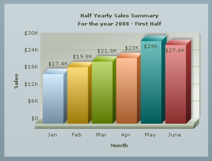

| FusionCharts and Flash > Using Flex |
|
FusionCharts can be very easily implemented in your Adobe Flex Applications using our specialized product FusionCharts for Flex. FusionCharts for Flex contains a separate set of chart SWF files that allow you to load the charts in Flex. These are custom built SWFs for loading in Adobe Flex, Flash CS3, CS4 and CS5. When using Flex IDE (Eclipse), the charts can be visually dragged and dropped from the components and configured. It also provides a rich API to help the developers connect to various Flex data sources. FusionCharts for Flex currently supports Flex SDK 2, 3 and 4. Let's see how to create a chart in Adobe Flex using FusionCharts for Flex. |
| Setting up |
|
To create a chart in Flex, first of all you need to download the FusionCharts for Flex pack, get the chart SWF files and FusionCharts.swc file from the Charts folder of the Flex Download Pack. Once done, please go through the installation processes for Flex Builder from the links given below: Once done, let's move on to the Flex Builder : |
| Source View |
|
In the code view , you can add a chart adding the following bold lines : <?xml version="1.0" encoding="utf-8"?> <mx:Application xmlns:mx="http://www.adobe.com/2006/mxml" layout="absolute" xmlns:ns1="com.fusioncharts.components.*"> <ns1:FusionCharts x="10" y="10" FCDataURL="Data.xml" FCChartType="Column3D"/> </mx:Application> The above code will render a Column3D chart with data from Data.xml file. Instead of XML URL, you can also provide XML as string here using FCDataXML property. The Data.xml file contains the data for chart which looks like the code shown below: <chart caption='Half Yearly Sales Summary' subcaption='For the year 2008 - First Half' xAxisName='Month' yAxisName='Sales' numberPrefix='$'> <set label='Jan' value='17400' /> <set label='Feb' value='19800' /> <set label='Mar' value='21800' /> <set label='Apr' value='23000' /> <set label='May' value='29000' /> <set label='June' value='27600' /> </chart> This will generate a chart like the image shown below:  Code for the above example is present in Download Pack > Code > Flash Examples > Flex folder. |
| Using Script |
|
Apart from the MXML code shown above you can also write Script to generate a chart. |
<?xml version="1.0" encoding="utf-8"?>
<mx:Application xmlns:mx="http://www.adobe.com/2006/mxml" initialize="showChart()" layout="absolute" >
<mx:Script>
<![CDATA[
//Import FusionCharts for Flex class
import com.fusioncharts.components.FusionCharts;
//Execute the function when the application initializes
private function showChart():void
{
//Instantiate a FusionCharts for Flex object
var FC:FusionCharts=new FusionCharts();
//Set chart type
FC.FCChartType="Column3D";
//Set chart data source URL
FC.FCDataURL="Data.xml";
//Configure x, y position on stage
FC.x=10;
FC.y=10;
//Add to display list
addChild(FC);
}
]]>
</mx:Script>
</mx:Application>
|
| FusionCharts for Flex offers a wide range of features that includes event handling, exporting, supporting Flex native data formats like ArrayCollection , Model, XMLList etc. You may read more on it at www.fusioncharts.com/flex/docs |